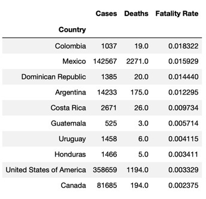

Lack of a set definition for first world vs third world country
Corrupted & changing/lack of data
Ample sources with graphs, charts, figures, statistics but sufficient datasets were more difficult to come by
May 2009 through July 2009 – most complete dataset with most relevant time period that represented the peak of the virus

Top 10 Fatality Rates by Country
Hypothesis: Our hypothesis was that people 65 and older did experience higher death rates because typically their current health has a large impact on their ability to fight off disease.